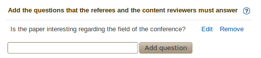
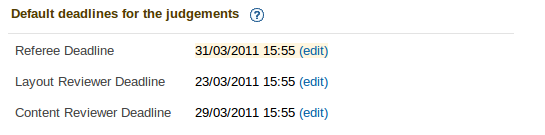
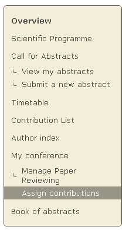
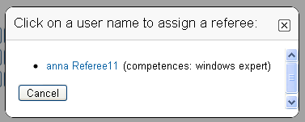
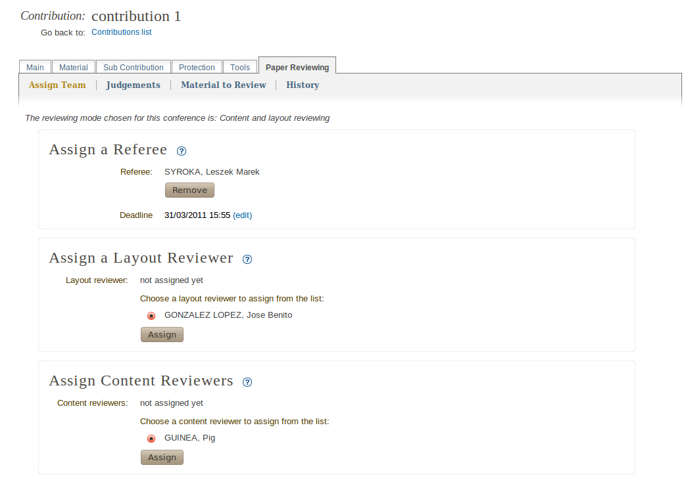
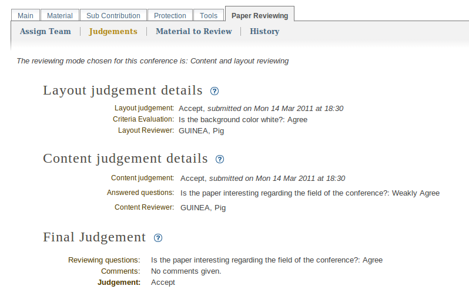
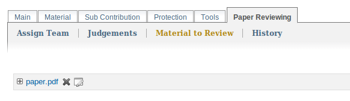
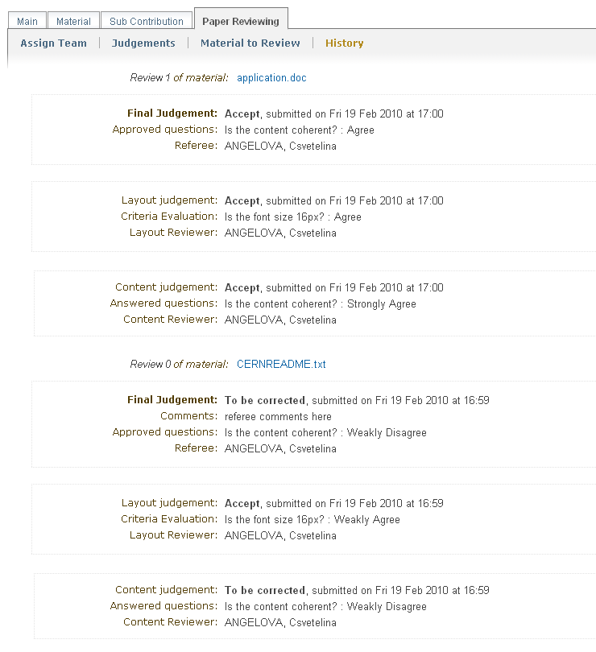

2.1. Paper reviewing module manager’s guide¶
2.1.1. Manager of the paper reviewing module¶
The manager of the module can modify all the settings and is responsible for the paper reviewing process. He creates the reviewing team and assigns contributions to the team. If you are a manager of the Paper Reviewing you can access it by clicking on the Manage Paper Reviewing link, after you are logged in (see the following figure).

2.1.2. Paper reviewing management¶
2.1.2.1. Set up the module¶
The first step is to choose the type of paper reviewing for your conference:
No reviewing: no use of the reviewing module
Content reviewing: paper’s content will be checked only by the content reviewers
Layout reviewing: paper’s layout will be checked only by the layout reviewers
Content and layout reviewing: both of the previous points

The second step is setting up the options depending on the type of reviewing you have chosen:
2.1.2.1.1. Options for content reviewing mode¶
There are three statuses by default. You can add your own statuses that will be proposed to the content reviewers, when they have to give opinions about the paper’s content, and to the referee when he has to give a judgement.

There is also a way to add reviewing questions in order to help content reviewers and referees give their judgement for the paper’s content. The referee will be able to see the content reviewers’ answers and this will help him with the final judgement.

2.1.2.1.2. Options for layout reviewing mode¶
You can add questions in order to help layout reviewers to give their judgment. These questions are visible when they have to judge the paper. This will guide them to follow the layout criteria given by you (see figure as example).

2.1.2.1.3. Options for content and layout reviewing mode¶
You can set up all the options in the previous two sections - 2.1.2.1.1 / 2.1.2.1.2.
You can set due dates for the reviewing team to give their judgments. They will not be able to judge the papers after the deadline. These default dates apply only for a new contribution.

The system sends automatic e-mails in order to notify the reviewing team or the authors of the papers in several situations. You can enable or disable the e-mails by clicking on the check boxes.

The paper reviewing module allows you to upload your own layout template which the authors can download and use. This will help them to follow the required layout criteria you impose. The template can be in the form of a document file.


2.1.2.2. Assign team¶
2.1.2.2.1. Assign managers¶
The managers of the paper reviewing will be responsible for the reviewing part of the conference. Their responsibility will be to designate referees, layout and content reviewers who will be responsible for paper reviewing and editing. The reviewing manager will be able to set up the options for the reviewing module, to specify the team’s competences and to assign contributions to the referees and reviewers. You can add paper review manager after accessing the Team tab.
From the Assign managers of paper reviewing area, click on the button Add Existing to search for the user.


2.1.2.2.2. Assign reviewers¶
You can create lists of referees, layout reviewers and content reviewers.
When you add a user to be a referee, you are giving him the rights to assign contributions to the layout and content reviewers. Also, the referee has to give the final judgement for the contribution - to be corrected, accepted or rejected. If the contribution status is given to be corrected, then the referee will be able to correct it by himself if necessary.
The layout reviewer has to judge the editing part of the contributions. He will be able to access only the contributions that are assigned to him for judgement. When layout reviewing mode is chosen, he will have to give the final judgement of the contribution. If needed the layout reviewer can correct the papers by himself.
The content reviewers have to give their opinion of the content of the contribution. They will have access only to the contributions that are assigned to them.

2.1.2.3. Define competences for team members¶
The paper reviewing managers can specify the team’s competences, if necessary. The list of all designated users will be offered after you access the Competences tab.

2.1.2.4. Assign papers to the reviewers¶
You can assign papers by clicking on the link: Assign papers (see the figure below).
The paper reviewing module gives you the opportunity to assign more than one paper to the same reviewers by selecting them using the check boxes. Depending on the chosen reviewing mode you need to assign different teams of reviewers (see section 2.1.2.1).
When you click Assign, a dialogue will appear. Use the dialogue popup to select the reviewer you wish to assign. If there are defined competences for him, they will be shown next to his name.
If the paper reviewing mode is “Content reviewing” or “Content and Layout Reviewing”, the referees you choose will be the responsibles for assigning layout and content reviewers to this contribution. The referee has also to give the final judgment for the contribution - to be corrected, accepted or rejected and to correct it by himself if necessary.
If you have chosen “Layout Reviewing” the layout reviewer should give the final judgement for the contributions.

2.1.3. Review option within Contribution Editor¶
2.1.3.1. How to access the “Reviewing” area for a contribution¶
Click on the link Contributions from the side menu. The list of all contributions will be displaied. Click on the contribution’s title and then the Paper Reviewing tab.
2.1.3.2. Assign reviewers for a paper¶
You can assign reviewers by clicking on Assign Team tab. A lists of referees, layout and content reviewers will be offered. Click on the button next to the user’s name and then click the Assign button. In order to remove an already assigned reviewer use the Remove button.

2.1.3.3. Judgement details for a paper¶
You can see the reviewer judgement details for the current review.

2.1.3.4. Reviewing materials for a contribution¶
The material which is a subject of reviewing is also accessible for the managers, from the Material to Review tab (see next figure).

2.1.3.5. Reviewing history for a contribution¶
If there are more than one reviews for a single contribution, the system keeps the reviewing history for each contribution. You can access it by clicking on the History tab.

Table Of Contents
- 2.1. Paper reviewing module manager’s guide